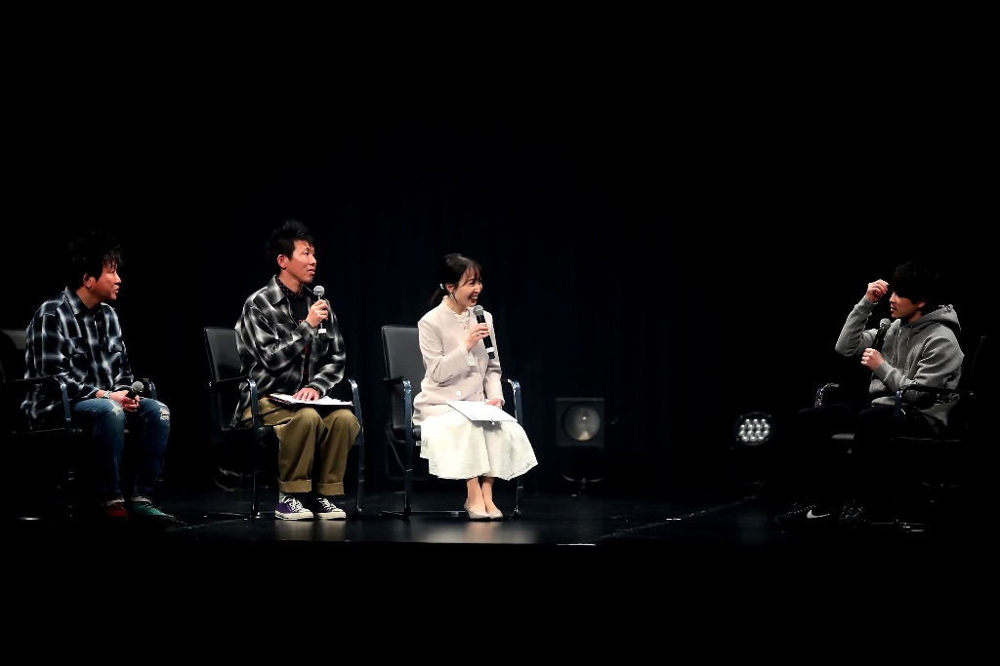
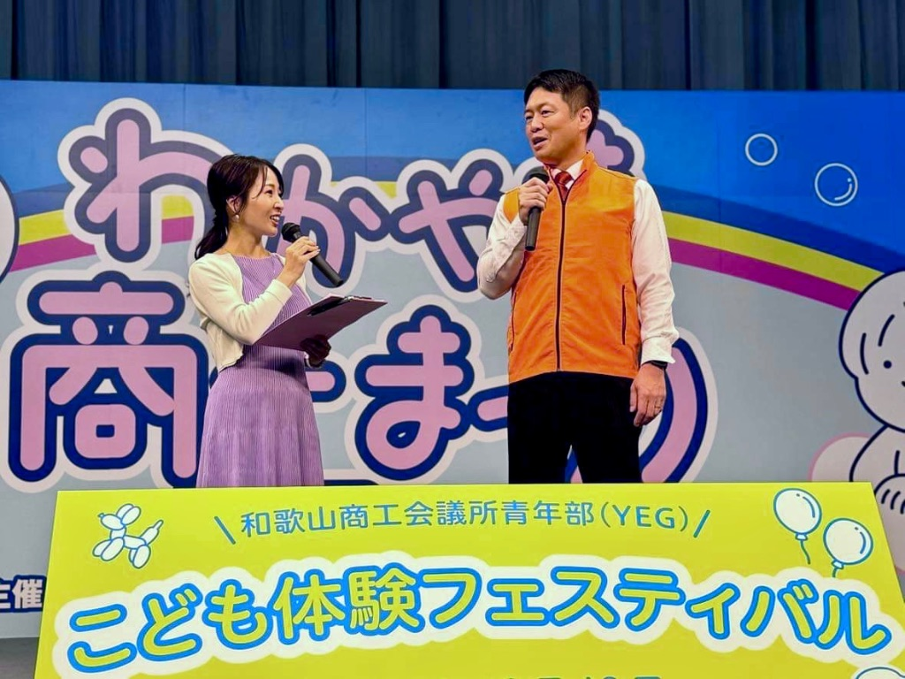
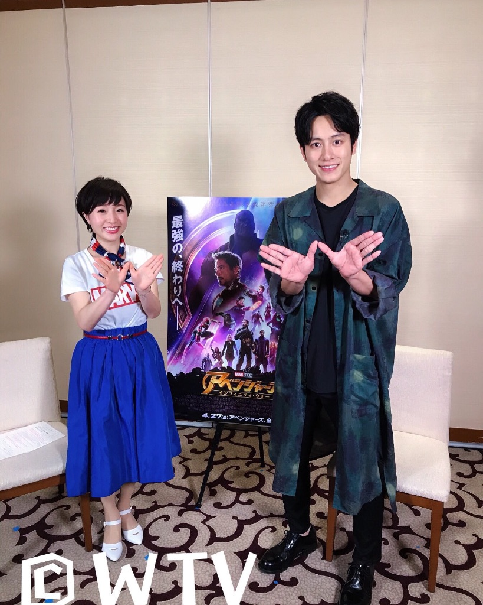
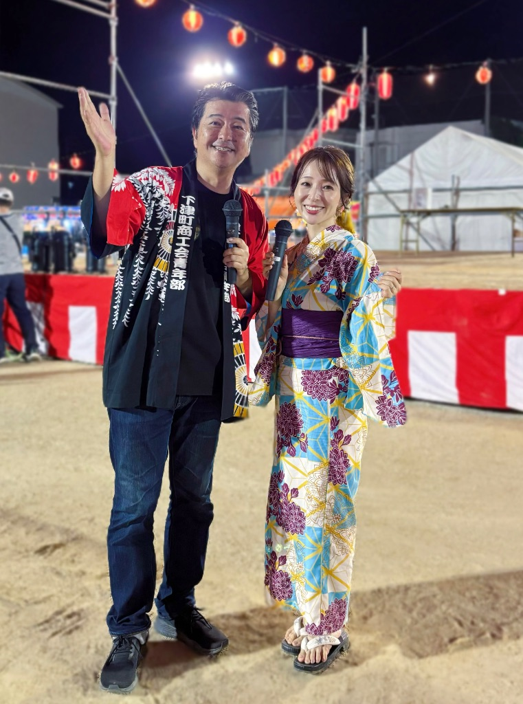
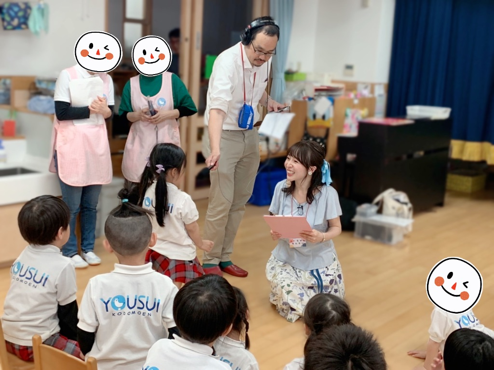
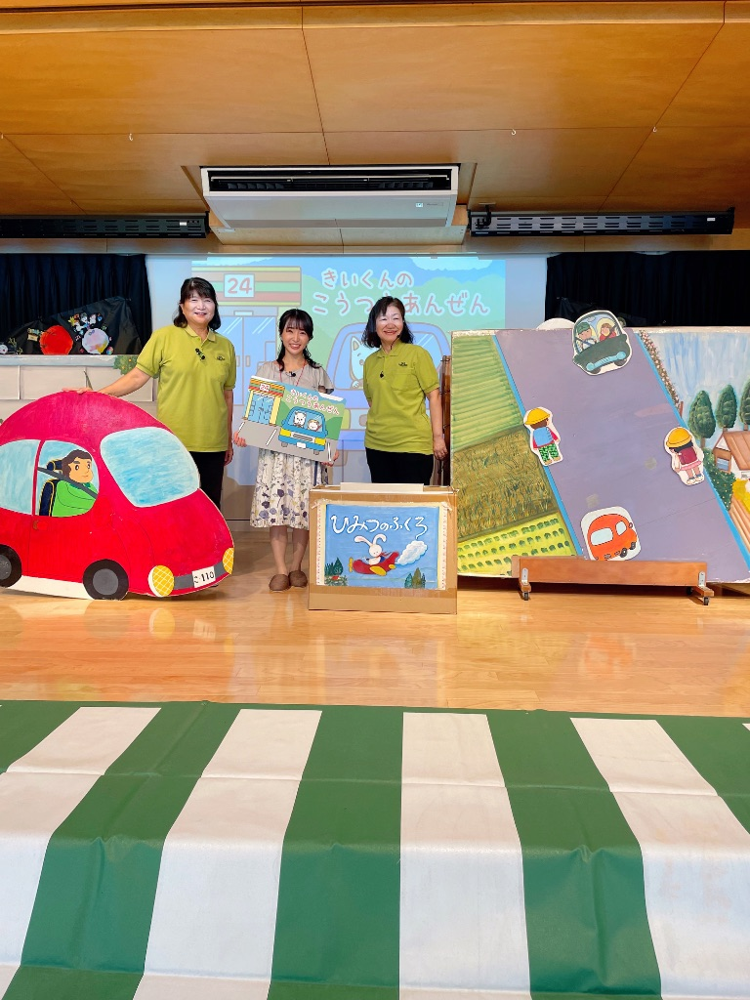

Wakayama-based Announcer
いわさきふきこ
Fukiko Iwasaki
ラジオパーソナリティ / テレビリポーター
司会者 / ナレーター
「言葉と声で、想いが"伝わる"時間を。」
プロフィールを見る →
Gallery
活動の風景






About
声と笑顔で、想いを届ける
和歌山を拠点に、近畿圏・東京でも活動。
イベント・式典・婚礼司会、
ラジオ、テレビ、ナレーション等を担当
行政・教育・スポーツ・地域イベントなど
「想いを届ける場」でのアナウンスを数多く経験。
また「自己肯定感」をテーマにした創作絵本の読み聞かせ、
実体験を元にした講演活動も進行中。
Activities
活動紹介
Radio
ラジオ
和歌山放送を中心に、ラジオパーソナリティとして活動。情報をわかりやすく整理し、あたたかい会話の場をつくります。
VIEW MORETelevision
テレビ
テレビ和歌山にて、情報番組・ニュース番組などに出演。現場の空気感を大切に、丁寧にリポートします。
VIEW MOREMC / Emcee
司会
式典・イベント・セミナー・スポーツ大会など、目的や雰囲気に合わせた話し方で、進行をデザインします。
VIEW MORENarration
ナレーション
行政・企業・学校等の動画ナレーション、テーマパーク・コンサートの場内アナウンス、CMなど幅広く対応。
VIEW MOREPicture Book / Talk
絵本・講演
「自己肯定感」をテーマにした創作絵本の読み聞かせや、実体験を元にした講演活動。お子さまから大人の方まで、心がほぐれる時間をお届けします。
VIEW MOREProfile
プロフィール
1989年9月17日生まれ。和歌山県海南市出身。3児の母。2012年より和歌山を拠点に幅広く活動中。
VIEW MORECATCHPHRASE
言葉と声で、想いが"伝わる"時間を。